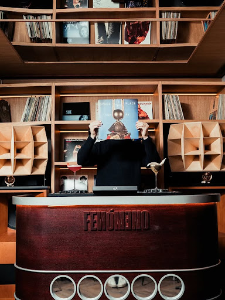
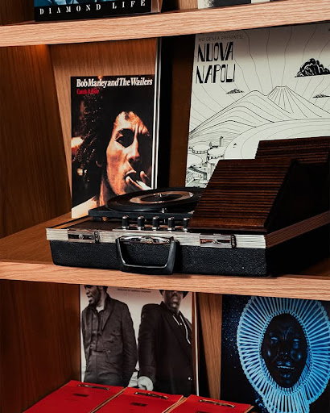
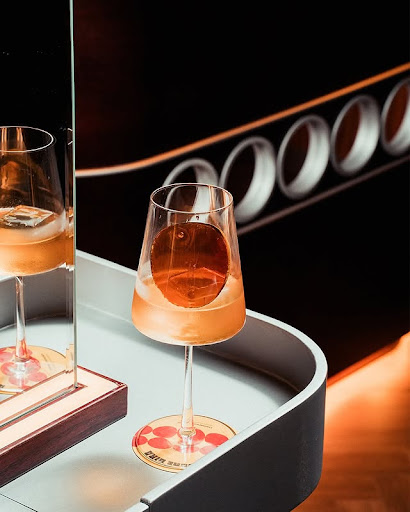
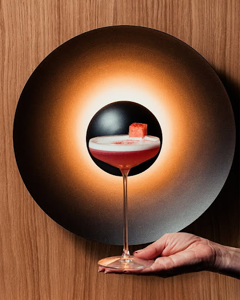
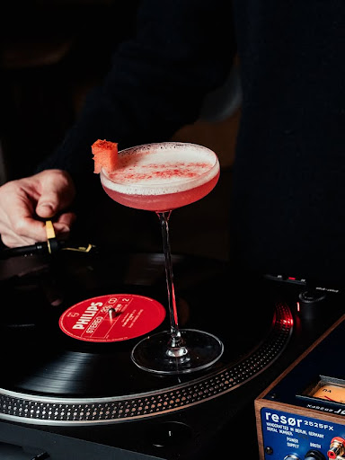
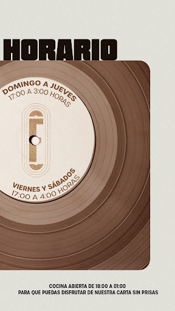

La aguja cae.
El mundo se detiene.
El detalle suena más fuerte que el ruido. Un vaso en la mano, un vinilo girando. Alta fidelidad para los que saben escuchar.

MADRID
HI-FI BAR
Calle Recoletos, 17 — Salamanca, Madrid
Donde el sonido toma forma.
Estética & Audio
Cultura del sonido

No es solo música, es la pureza técnica de un sistema analógico diseñado para sentir cada frecuencia en el pecho.
Ambiente
Luz tenue, madera noble y el crujido orgánico de la cera. Un refugio analógico en el centro de la capital.
Mixología Hi-Fi

Cócteles de autor que respetan el clásico y una selección de vinilos curada por selectores locales e internacionales.


La curaduría como forma de arte.
Sistema de Sonido
Altavoces de alta gama para una dispersión sonora sin precedentes.
Pureza Analógica
El calor del sonido real, procesado con componentes de audiófilo.
Tragos Lentos
Mixología pensada para acompañar la escucha, sin prisa.
